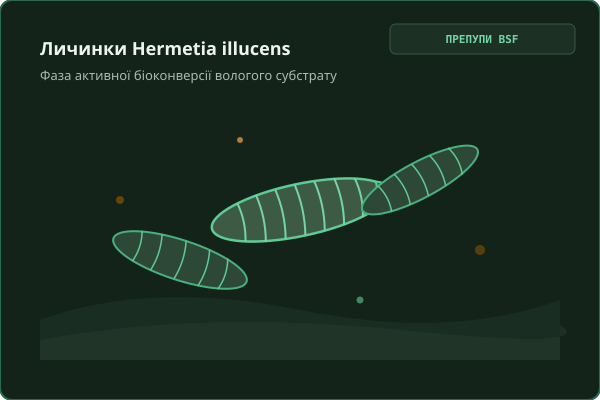
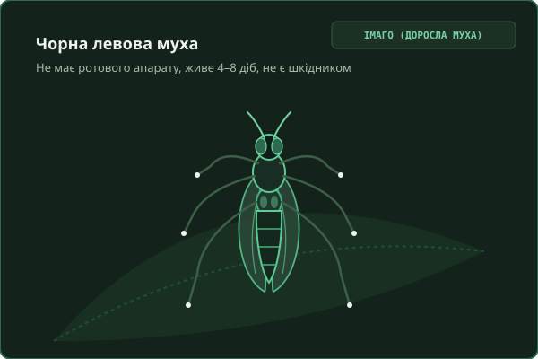
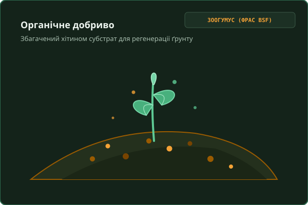

Перетворюємо органічні відходи на цінний протеїн і добриво
EcoFly переробляє вологі рослинні відходи харчових виробництв Києва за допомогою личинок чорної левової мухи (Hermetia illucens) для створення замкненого біологічного циклу без вивезення на сміттєзвалища.
Як працює замкнений цикл
Чисті рослинні залишки харчової промисловості за 12–14 діб перетворюються на корисні біоресурси.
1. Забір за графіком
Герметичні оборотні контейнери для стабільного потоку від ~20 кг/добу.
Докладніше про забір
2. Переробка личинками
Інтенсивне поїдання субстрату личинками BSF без їдких запахів.
Докладніше про технологію
3. Отримання продуктів
Розподіл на кормову білкову фракцію, жир і зоогумус (фрас).
Докладніше про фракціонування
4. Повернення в цикл
Протеїн збагачує корми, а зоогумус відновлює родючість міських ґрунтів.
Докладніше про користь
Як виглядає біоконверсія BSF на практиці
Схематичні зображення та наукові світлини личинок, дорослої мухи та готового зоогумусу з відкритих джерел.

Личинки BSF (препупи)
Активна фаза біоконверсії рослинного субстрату, що накопичує високу концентрацію протеїну та корисних ліпідів.

Доросла особина (імаго)
Живе 4–8 діб виключно за рахунок запасів жиру, не має ротового апарату, не харчується і не розносить інфекції.

Зоогумус (фрас BSF)
Стабілізований органічний субстрат з природним вмістом хітину для покращення мікрофлори та імунітету рослин.
Вивіз органічних відходів без запаху та турбот
Перетворіть залишки пивоваріння, соків або пекарень на практичний внесок у циркулярну економіку з документальним підтвердженням переробки.
Докладніше про логістику
Докладніше про звітність
Докладніше про міські ініціативи
Заявка на регулярний забір відходів
Опишіть ваші органічні потоки. Ми зв'яжемося протягом 24 годин.
Альтернативний протеїн, жир та зоогумус із Києва
Локальне джерело білка для рибних і птахогосподарств та кормів для тварин із меншою залежністю від імпорту.
Кормовий протеїн з личинок
Багатий на незамінні амінокислоти та лауринову кислоту (Spranghers et al., 2017).
Докладніше про застосування
Личинковий жир (ліпіди)
Високий вміст середньоланцюгових жирних кислот (MCFA), корисних для кишкової мікрофлори тварин.
Докладніше про властивості
Зоогумус (фрас BSF)
Природне біодобриво з хітином для стимуляції росту та мікробіоти ґрунту.
Докладніше про зоогумус
Порівняльна таблиця: Соя / Рибне борошно / Протеїн з личинок EcoFly
| Критерій | Соєвий шрот | Рибне борошно | Протеїн з личинок EcoFly |
|---|---|---|---|
| Залежність від імпорту й курсу валют | Висока (волатильність світових ринків) | Критична (морський імпорт) | Менша залежність від імпорту (локальне виробництво) |
| Стабільність складу та поживність | Середня (залежить від погодного сезону) | Змінна (залежить від сезону вилову) | Висока (контрольований мікроклімат вирощування) |
| Сертифікація та статус в Україні | Стандартна реєстрація в кормовому реєстрі | Вимоги до ветеринарного нагляду | Статус личинок як корму в Україні уточнюється |
| Орієнтир ціни на ринку | За біржовими цінами ринку | Залежить від імпорту й логістики | Живі личинки: 30 грн/кг (2024) та 140–275 грн/кг (2025)* |
Запросити зразок протеїну або обговорити наміри (LOI)
Для виробників кормів, рибних та птахогосподарств, які тестують нові джерела білка.
Розрахуйте ефект переробки ваших відходів
Усі коефіцієнти базуються на наукових специфікаціях швейцарського інституту Eawag/Sandec.
Зразок паспорта партії відходів
Кожна партія відходів отримує код формату ECO-РРРР-ММДД-XXXX та зразок сертифіката вторинної переробки для вашої нефінансової звітності.
• Отримано стабілізованого зоогумусу (фрасу): 32.5 кг
• Деполігонізація: 250 кг перероблено замість вивезення на полігон
Вплив на екосистему Києва
Проєкт поєднує зменшення вивезення відходів на полігони, підтримку міських зелених ініціатив та дотримання санітарних вимог.
1. Екологія: Деполігонізація
Органіка становить від 27% до 65% міських побутових відходів (Світовий Банк). Біоконверсія скорочує утворення метану.
Докладніше про парниковий ефект
2. Соціум: Міські сади
Частину отриманого зоогумусу ми плануємо надавати київським шкільним біологічним лабораторіям і громадським садам.
Докладніше про освіту
3. Етика: Чистий субстрат
Дотримання вимог Регламенту (ЄС) 2017/893 щодо дозволених рослинних субстратів та забезпечення простежуваності партії.
Докладніше про стандарти
Ризики та як ми їх знімаємо
Ми будуємо довіру інвесторів та партнерів через відкритий діалог щодо викликів стадії прототипу.
| Ризик / Виклик | Статус зняття | Конкретний захід реагування | Цільовий орієнтир |
|---|---|---|---|
| Статус білка в Україні | У ПРОЦЕСІ | Плануємо звернутися до Держпродспоживслужби щодо регуляторного статусу та умов застосування. | Орієнтація на pet food та лабораторні дослідження |
| Сезонність відходів | У ПРОЦЕСІ | Комбінуємо різнорідні рослинні потоки (броварні, хлібопекарні, овочева переробка). | Стабільний потік незалежно від пори року |
| Готовність ринку платити | У ПРОЦЕСІ | Попередньо тестуємо зацікавленість через необов'язуючі листи про наміри (LOI). | Фокус на аквакультурі (форель) та pet food |
| Запах та санітарні норми | ЗАПЛАНОВАНО | Відмова від м'яса/гною, закриті модулі; передбачаємо примусову витяжку з біофільтрами. | Повна нейтралізація запахів у приміщенні |
Чесна часова шкала: що зроблено і що в планах
Ми не видаємо гіпотези за досягнуті результати. Поточний статус прототипу:
| Етап | Статус | Зміст робіт | Результат / Очікування |
|---|---|---|---|
| Глибинні розмови | ЗРОБЛЕНО | 3 розмови з власниками: виробником квасу, власником свиноферми та розводчиком оленів. | Підтверджено інтерес до стабільного протеїну та вивезення макухи |
| Аналіз ринку Києва | У ПРОЦЕСІ | Заплановані інтерв'ю з київськими закладами HoReCa, рітейлом та аквафермерами. | Формування первинного пулу заявок на пілотний забір |
| Тестовий модуль | ЗАПЛАНОВАНО | Монтаж експериментального модуля прототипу в Києві, калібрування раціону BSF. | Отримання перших сертифікованих зразків білка та фрасу |
Хто розвиває EcoFly
Люди та організації, об'єднані ідеєю циркулярної біоекономіки в Києві.
Владислав Колісник
Владислав Колісник — засновник проєкту EcoFly, дослідник технологій біоконверсії органічних відходів за допомогою BSF.
Youthquake
Інкубаційна програма, що сприяє валідації бізнес-моделі, менторству та контактам із профільними експертами галузі.
Партнери та наукові установи
Відкриті до співпраці з біологічними кафедрами київських університетів, ветеринарними лабораторіями та міськими екослужбами.
Відповіді на ключові питання
Усе про відходи, личинок, запах, безпеку та умови співпраці на стадії прототипу.
Ми приймаємо чисті вологі рослинні залишки: пивну дробину, макуху та вичавки з виробництва соків і квасу, хлібні обрізки, а також рослинні залишки з кухонь (pre-consumer HoReCa). Ми не приймаємо м'ясо, рибу, гній чи зіпсовані продукти з цвіллю згідно з вимогами європейського Регламенту 2017/893 до кормових субстратів.
Личинки Hermetia illucens швидко переробляють свіжу органіку, що пригнічує процеси анаеробного бродіння та зменшує утворення їдких сполук. За свіжого завантаження відчувається помірний дріжджово-землистий запах. Для виробничого приміщення ми передбачаємо систему примусової витяжки з біофільтрами для нейтралізації запахів.
За даними наукових джерел (Eawag/Sandec, FAO), дорослі особини Hermetia illucens не мають функціонального ротового апарату, не живляться в дорослому стані, не кусають людей чи тварин, не сідають на їжу і не розглядаються як типові переносники збудників інфекцій, на відміну від звичайних кімнатних мух.
Ми орієнтуємося на регулярний забір від ~20 кг на день за узгодженим графіком (щодня або 2–3 рази на тиждень) у герметичних оборотних контейнерах, щоб сировина не застоювалася і не починала бродити.
Утилізація безпечних рослинних відходів відповідає Закону України «Про управління відходами». Щодо використання білка комах у комбікормах — у ЄС він офіційно дозволений для аквакультури та птиці (Регламенти ЄС 2017/893 та 2021/1372). В Україні статус личинок як корму наразі уточнюється: ми плануємо звернутися до Держпродспоживслужби щодо регуляторного статусу та умов застосування.
На стадії прототипу ми тестуємо умови співпраці: безоплатний забір за умови стабільного відсортованого обсягу від ~20 кг/день, або домовленість із наданням частини готового органічного добрива та зразка паспорта переробки для звітності.
Основними потенційними споживачами є виробники кормів для аквакультури (форелеві, осетрові господарства), птахоферми, виробники pet food (корми для котів, собак, рептилій), а також оранжереї та фермери, які зацікавлені в органічному зоогумусі. На стадії прототипу ми збираємо попередні листи про наміри (LOI) на тестові партії.
Ми відкриті до діалогу з impact-інвесторами, дослідницькими установами Києва та представниками міських програм, зацікавленими у розвитку суверенного виробництва протеїну та деполігонізації органічних відходів столиці.
Оберіть зручний формат співпраці
Зв'яжіться з нами напряму через Telegram, електронну пошту або LinkedIn.
Віддаю відходи
Маєте регулярні вологі рослинні відходи в Києві? Давайте обговоримо графік забору та надання оборотних контейнерів.
Заповнити форму заборуКупую продукти
Цікавить кормовий білок, жир або зоогумус? Замовте зразок для аналізу або підпишіть лист про наміри (LOI).
Запит на зразок білкаПартнерство
Інвестиції в кліматичні технології, наукові дослідження біоконверсії або співпраця з комунальними службами Києва.
Написати листа